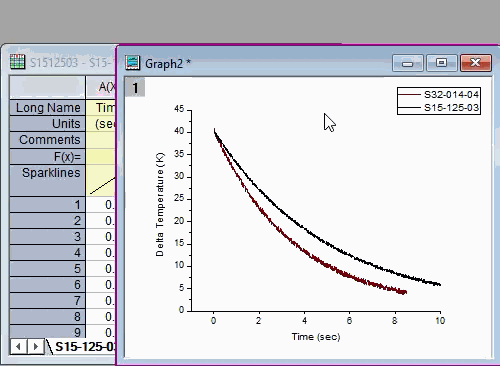
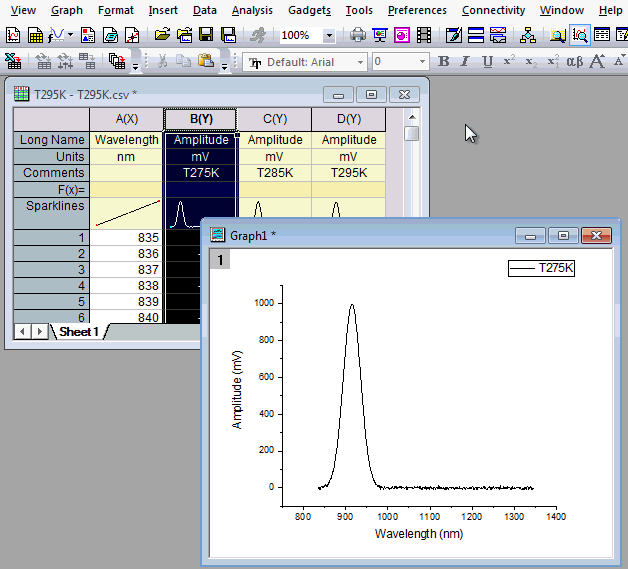

FAQ-144 Welche Möglichkeiten habe ich, um Diagramme zu einer vorhandenen Grafik hinzuzufügen?
Add-Data-to-Layer
Letztes Update: 07.07.2020
Drag&Drop
Diese Methode wird auf die meisten von Arbeitsblättern abgeleiteten 2D- und 3D-Diagramme angewendet:
- Gehen Sie zum Arbeitsblattfenster und wählen Sie Ihre/n Datensatz/-sätze aus.
- Fahren Sie mit der Maus über den linken oder rechten Rand Ihrer Auswahl und, wenn der Cursor aussieht wie , ziehen Sie die Daten per Drag&Drop aus dem Blatt in den Zieldiagrammlayer. Weitere Informationen finden Sie unter Daten durch Drag&Drop hinzufügen.

Zeichnung aus Arbeitsmappe/Matrix kopieren und einfügen
Diese Methode kann auf einfache 2D- und 3D-Diagramme angewendet werden, die aus einem Arbeitsblatt oder einer Matrix erstellt wurden:
- Gehen Sie zum Arbeitsblatt- oder Matrixfenster und wählen Sie Ihre/n Datensatz/-sätze aus. Eine Minisymbolleiste wird angezeigt. Klicken Sie auf die Schaltfläche Zum Zeichnen kopieren.

- Aktivieren Sie das Zieldiagrammfenster, wählen Sie im Menü Bearbeiten: Einfügen oder drücken Sie die Tasten Strg + V, um die kopierten Daten in den aktiven Layer zu zeichnen.
- 
Einfügen: Zeichnung in Layer
Diese Methode kann nur für 2D-Linien-, Punkt-, Linien+Symbol-, Säulen- und Flächendiagramme verwendet werden:
- Gehen Sie zum Arbeitsblattfenster und wählen Sie Ihre/n Datensatz/-sätze aus.
- Kehren Sie zum Diagrammfenster zurück und stellen Sie sicher, dass der Ziellayer der aktive Layer ist.
- Wählen Sie Einfügen: Zeichnung in Layer: Diagrammtyp.
- 
Dialog Layerinhalt
- Klicken Sie doppelt auf das Layersymbol in der oberen linken Ecke des Diagramms. Oder klicken Sie auf den leeren Bereich im Layerrahmen und wählen Sie die Schaltfläche Zeichnung hinzufügen auf der angezeigten Minisymbolleiste.
- Verwenden Sie den Dialog Layerinhalt, um Daten zum Layer hinzuzufügen. Weitere Informationen finden Sie in diesem Video-Tutorial.
Layerinhalt; oder lesen Sie dieses Thema im Origin-Handbuch.

Dialog Diagrammeinstellungen
- Klicken Sie mit der rechten Maustaste auf das Symbol des Ziellayers in der oberen linken Ecke des Diagrammfensters und wählen Sie Setup Diagramm.
- Wählen Sie Arbeitsblatt/-blätter im oberen Bedienfeld.
- Wählen Sie den Ziellayer im unteren Bedienfeld.
- Setzen Sie die Spalten als X, Y, Fehler etc. in mittleren Bedienfeld.
- Klicken Sie auf die Schaltfläche Hinzufügen.

Hilfe zum Dialog Diagrammeinstellungen finden Sie unter Datenzeichnungen mit dem Dialog Diagrammeinstellungen hinzufügen, entfernen, ersetzen und verbergen; oder sehen Sie dieses Video.
Zeichnung aus existierender Grafik kopieren und einfügen
Diese Methode eignet sich nur für einfache 2D-Diagramme:
- Um eine Zeichnung aus einem existierenden Diagrammfenster zu kopieren und sie in das gleiche oder ein anderes Fenster einzufügen, klicken Sie einmal auf die Zeichnung und drücken Sie Strg+C.
Alternativ
klicken Sie einmal auf die Zeichnung und wählen die Schaltfläche Zeichnung kopieren  auf der Minisymbolleiste.
auf der Minisymbolleiste.
- Klicken Sie auf den Zieldiagrammlayer und drücken Sie STRG + V.

Weitere Informationen finden Sie unter Daten durch Kopieren und Einfügen einer Zeichnung hinzufügen.
| Hinweis: Diese Methoden können nicht auf Diagrammtypen angewendet werden, die mit Hilfe von Zwischenberechnungen erzeugt werden (z. B. Boxdiagramme, Histogramme, gestapelte 3D-Balkendiagramme etc.). |
Schlüsselwörter:Layer, Inhalt, mehrere, Kurve